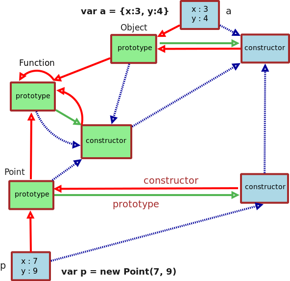

POPL Lecture notes: Embedding Javascript objects in Scheme
Table of Contents
- 1. Introduction
- 2. Javascript Embedded in Scheme: Syntax
- 3. Javascript Semantics Recap
- 3.1. Function objects and Regular objects
- 3.2. Every object is constructed from a unique function object
- 3.3.
Functionis the primordial fo - 3.4.
functioncreates function objects - 3.5. Every function object owns the field
prototype - 3.6.
Objectis a fo - 3.7.
newconstructs objects - 3.8. Recap of the Javacsript Ontology graph
- 4. Javascript Embedded in Scheme: Implementation
- 5. Unit testing
- 6. Comparing Javascript with its Scheme embedding
- 7. Testing the implementation
- 8. Sources
- 9. Conclusion
1. Introduction
The goal of this section is to build a Scheme model of how Javascript's object system works.
Until now, we have approached the problem of modelling a language by defining an abstract syntax for the language and then building an interpreter that evaluates expressions in that abstract syntax.
Sometimes, however, it is easier to embed the language to be modelled (the object language) into another (host) language by implementing the main features of the object language (here, Javascript) as a library, i.e., a set of functions in the host language (here, Scheme). By embedding the object language into the host language, we have at our disposal the entire host language and the simulated object language via the library. However, there are disadvantages as well. Sometimes, the embedding approach doesn't give us complete flexibility in simulating the language and things turn out slightly different in the embedding than the original language.
2. Javascript Embedded in Scheme: Syntax
The abstract syntax for Javascript constructs and entities and their mapping to Scheme is given below:
Javascript => Scheme
{x: 4, y: 3} => (js-obj '(x 4) '(y 3))
a.x => (a 'x)
a.x = exp => (a 'x exp)
a.m(arg ...) => (call a 'm arg ...)
function (formal ...) { => (js-fn (lambda (formal ...)
body body))
}
new exp(arg ...) => (js-new exp arg ...)
Function => *js-fn*
Object => *js-obj*
3. Javascript Semantics Recap
The latest authoritative document on Javascript is the Ecma-262 Language Specification, 14th Edition, 2023. Here, we briefly recall the key ideas behind the Javascript Object model as we understand it. Note that the terminology we use differs from that used in the official specification. For example, what we call parent, the official spec calls prototype.
3.1. Function objects and Regular objects
There are two kinds of objects: function objects (fo, pronounced like "foe") and regular objects (ro, pronounced like "row"). Function objects have in them a closure, regular objects do not.
3.2. Every object is constructed from a unique function object
Every object is constructed from a unique function object, which is referred to as the former object's constructor.
3.3. Function is the primordial fo
Function is the constructor of itself.
3.4. function creates function objects
The invocation function(p ...){body} constructs a fo.
3.5. Every function object owns the field prototype
This field is initially bound to a ro, but there are two exceptions.
The prototype field of Function is a fo. The prototype field
of Function.prototype is non-existent.
3.6. Object is a fo
Object is a distinguished function object constructed Function.
3.7. new constructs objects
new <e> (<e'> ...) constructs a new object. The assumption is that
<e> evaluates to a fo f. First, an object o is constructed from
f. The list (<e'> ...) is evaluated to a list of values (<v>
...). Then the closure of f is applied to the list (o <v> ...).
The object o is returned.
Two things to note:
- 1. If
<e>evaluatesFunction, then the new object is a fo, otherwise it is a ro. - 2. If
<e>evaluates to the initial value ofFunction.prototype, then it is an error.
3.8. Recap of the Javacsript Ontology graph

4. Javascript Embedded in Scheme: Implementation
The Javascript object model is implemented as a module js.rkt that
publishes the following bindings:
js-fn, js-new, js-obj, *js-fn* and *js-obj*.
4.1. Creating function objects
In the embedding we implement an object is defined to be a
Javascript function object (fo) if it has a field called closure.
The predicate js-fn? tests if its argument is a fo.
(require "obj.rkt")
(define js-fn?
(lambda (o)
(call o 'owns? 'closure)))
The Scheme function make-fo is the internal mechanism to create a
javascript function object. (make-fo c parent proto) creates a
function object with closure c, parent and prototype proto.
(define (make-fo c parent proto)
(let ([binds (make-hash)])
(let ([set (make-setter binds)])
(let ([fo
(basic-make-obj
parent binds
(lambda () (set 'closure c)))])
(when (obj? proto) ;; proto is obj? instead of #f
(begin
(set 'prototype proto)
(proto 'constructor fo)))
fo))))
Notice that the process of creating a function object fo involves
creating an object with basic-make-obj and setting its closure and
prototype fields (if a prototype was specified to make-fo). In
the latter case, the prototype's constructor field is set to fo.
4.2. Prototype of *js-obj*
With make-obj and make-fo available, we have all the mechanisms to
create objects, but we haven't created any Javascript objects yet.
Now we are ready to do so. We set up the initial Javascript runtime by systematically reconstructing the Javascript Ontology diagram (keep this handy in another window).
{kind=link}
The first object created is the ground object js-obj-proto destined
to be the prototype of the yet to be constructed *js-obj*.
(define js-obj-proto (make-obj))
4.3. Prototype of the function object
The second object created is the function object js-fn-proto
destined to be the prototype of the yet to be defined *js-fn*
object. js-fn-proto has a void closure, a parent that is
js-obj-proto and no prototype field.
;;; js-fn-proto : fo?
(define js-fn-proto
(make-fo
void ; closure
js-obj-proto ; parent
#f ; no prototype
))
4.4. Creating *js-fn*
The top-level *js-fn* function object corresponds to Function in
Javascript. It is created using make-fo. js-fn-proto is both the
parent and prototype of *js-fn*. The constructor of *js-fn* is
itself.
;;; *js-fn* : fo?
(define *js-fn*
(let ([f (make-fo
void ; closure
js-fn-proto ; parent
js-fn-proto ; prototype
)])
(f 'constructor f)
f))
4.5. Creating *js-obj*
The function object *js-obj* corresponds to Object in Javascript.
It is a function object built with a closure that is void, a parent
that is js-fn-proto and a prototype that is js-obj-proto.
;;; *js-obj* : fo?
(define *js-obj*
(make-fo
void ; closure
js-fn-proto ; parent
js-obj-proto ; prototype
))
4.6. Implementing function
The function keyword takes a list of formal parameters and a body
and returns a function object. The Scheme implementation of
function is the function js-fn that takes a closure and returns a
function object.
;;; function (<arg> ...) { <body> }
;;; ===> (fn (lambda (arg ...)) <body>)
js-fn is make-fo invoked with a closure, js-fn-proto as the
parent, a brand new object as the prototype. The prototype's parent
is js-obj-proto.
;;; js-fn : closure? -> fo?
(define js-fn
(lambda (c)
(make-fo
c ; closure
js-fn-proto ; parent
(make-obj js-obj-proto) ; prototype
)))
4.7. Implementing new
The javascript constructor new <fo> <args> is implemented using
function js-new. js-new takes a function object fo and a
(possibly empty) list args and returns an object.
;;; js-new : (fo? . (listof any/c)) -> obj?
(define js-new
(lambda (fo . args)
(let* ([a (make-obj (fo 'prototype))]
[c (fo 'closure)]
[ignore (apply c (cons a args))])
a)))
4.8. Implementing Literal objects
A literal object is constructed from *js-obj* and populated with a
set of bindings bind.
;;; js-obj : (listof (list symbol? any/c)) -> obj?
(define js-obj
(lambda binds
(let ([a (js-new *js-obj*)])
(for-each (lambda (bind)
(a (first bind) (second bind)))
binds)
a)))
5. Unit testing
(require rackunit)
(require rackunit/text-ui)
(define (check-err thunk)
(check-exn exn:fail? thunk))
(define check-eq check-eq?)
(define check-owns
(lambda (o x)
(check-true (call o 'owns? x))))
(define check-not-owns
(lambda (o x)
(check-false (call o 'owns? x))))
(define literal-ts
(test-case
"object tests"
(let ()
;;; *js-fn* tests
(check-true (obj? *js-fn*))
(check-true (js-fn? *js-fn*))
(check-owns *js-fn* 'prototype)
;;; js-fn-proto
(define js-fn-proto (*js-fn* 'prototype))
(check-true (js-fn? js-fn-proto))
(check-not-owns js-fn-proto 'prototype)
;;; *js-obj*
(check-true (obj? *js-obj*))
(check-true (js-fn? *js-obj*))
(check-owns *js-obj* 'prototype)
;;; js-obj-proto
(define js-obj-proto (*js-obj* 'prototype))
(check-false (js-fn? js-obj-proto))
(check-not-owns js-obj-proto 'prototype)
(define a (js-obj '(x 3)))
(check-eq (a 'x) 3)
(check-owns a 'x)
(check-not-owns a 'y)
(check-err (lambda () (a 'y)))
(define Point (js-fn (lambda (this y)
(this 'y y))))
(check-true (js-fn? Point))
(check-eq (Point 'constructor) *js-fn*)
(check-owns Point 'closure)
(check-eq (: Point 'constructor 'prototype) js-fn-proto)
(define p (js-new Point 5))
(check-eq (p 'constructor) Point)
(check-owns p 'y)
(check-eq (p 'y) 5)
;; set a field in Point's prototype. It should be inherited by p
((Point 'prototype) 'z 2)
(check-eq (p 'z) 2)
;; set a field in js-obj-proto. All other objects should inherit this.
(js-obj-proto 'w 10)
(check-eq (*js-fn* 'w) 10)
(check-eq (*js-obj* 'w) 10)
(check-eq (Point 'w) 10)
(check-eq (p 'w) 10)
(check-eq (a 'w) 10))))
6. Comparing Javascript with its Scheme embedding
6.1. Differences
- closure
- In Javascript, a function's closure is itself an
object. In the Scheme embedding that we have
designed, the closure is not an object but a method.
In Javascript, the function object does not have a
field called
closure; in our implementation of Javascript objects, the closure is available through theclosurefield.
apply- In Javascript, the
applymethod on a function object allows the object's closure to be applied to an arbitrary object and additional arguments. In the embedding,applyis not available. Instead, the closure is directly available as a method. The effect ofapplyis instead achieved in the implementation using the already available apply function of Scheme.
hasOwnProperty- This method allows one to query an object to
find out if a particular field is owned by that object. In
Javascript, this field is typically inherited. In our
embedding every javascript object has its own field called
owns?. undefinedbehaviour for missing fields- Javascript returns
undefined if a field is not found during lookup. The scheme
embedding raises an error. The
error-objin the Scheme implementation can be easily changed to returnundefined. But raising an error seems the more sensible thing to do. Theundefinedprimitive data is not implemented.typeof- Javascript has a primitive function called
tyypeofthat returns the type of its argument. In the embedding no such function is provided. However, the functionjs-fn?is available for use to query if an object is a function object.
6.2. Other observations
The nice thing about this embedding is that there is no difference in
the interface between javascript objects and objects created using
make-obj. This is because javascript objects and scheme objects are
created from the same primitive basic-make-obj. This allows us to
mix javascript, the simple Scheme object model and the rest of Scheme,
all in the same program.
7. Testing the implementation
:CUSTOMID: comparison
1: // Javascript Node.js 2: // $ node --version 3: // v0.10.19 4: 5: // Function 6: > typeof(Function) 7: 'function' 8: > Function.hasOwnProperty("prototype") 9: true 10: > var FunctionProto = Function.prototype 11: undefined 12: > typeof(FunctionProto) 13: 'function' 14: > FunctionProto.hasOwnProperty("prototype") 15: false 16: 17: // Object 18: > typeof(Object) 19: 'function' 20: > Object.hasOwnProperty("prototype") 21: true 22: 23: // ObjProto 24: > var ObjProto = Object.prototype; 25: undefined 26: > typeof(ObjProto) 27: 'object' 28: > ObjProto.hasOwnProperty("prototype") 29: false 30: 31: > var a = {x:3}; 32: undefined 33: > a.x 34: 3 35: > a.hasOwnProperty("prototype") 36: false 37: > a.hasOwnProperty("x"); 38: true 39: > a.hasOwnProperty("y"); 40: false 41: > a.y 42: undefined 43: 44: > var Point = function(y) {this.y = y;}; 45: undefined 46: 47: 48: > typeof(Point) 49: 'function' 50: > Point.constructor === Function 51: true 52: > Point.constructor.prototype === FunctionProto 53: true 54: > var p = new Point(5) 55: undefined 56: > p.constructor === Point 57: true 58: > p.hasOwnProperty("y") 59: true 60: > p.y 61: 5 62: 63: // set a field in Point's prototype. 64: // It should be inherited by p 65: 66: > Point.prototype.z = 2 67: 2 68: > p.z 69: 2 70: 71: // set a field in ObjProto 72: // All other objects should inherit this. 73: > ObjProto.w = 10 74: 10 75: > Function.w 76: 10 77: > Object.w 78: 10 79: > Point.w 80: 10 81: > p.w 82: 10 83: > a.w 84: 10
1: Welcome to Racket v5.1.3. 2: > (require "js.rkt") 3: > (obj? *js-fn*) 4: #t 5: ;; Function tests 6: > (js-fn? *js-fn*) 7: #t 8: > (call *js-fn* 'owns? 'prototype) 9: #t 10: > (define js-fn-proto (*js-fn* 'prototype)) 11: 12: > (js-fn? js-fn-proto) 13: #t 14: > (call js-fn-proto 'owns? 'prototype) 15: #f 16: 17: ;; *js-obj* 18: > (js-fn? *js-obj*) 19: #t 20: > (call *js-obj* 'owns? 'prototype) 21: #t 22: 23: ;; js-obj-proto 24: > (define js-obj-proto (*js-obj* 'prototype)) 25: 26: > (js-fn? js-obj-proto) 27: #f 28: > (call js-obj-proto 'owns? 'prototype) 29: #f 30: 31: > (define a (js-obj '(x 3))) 32: 33: > (a 'x) 34: 3 35: > (call a 'owns? 'prototype) 36: #f 37: > (call a 'owns? 'x) 38: #t 39: > (call a 'owns? 'y) 40: #f 41: > (a 'y) 42: error-obj: no field y 43: 44: > (define Point 45: (js-fn (lambda (this y) 46: (this 'y y)))) 47: 48: > (js-fn? Point) 49: #t 50: > (eq? (Point 'constructor) *js-fn*) 51: #t 52: > (eq? (: Point 'constructor 'prototype) js-fn-proto) 53: #t 54: > (define p (js-new Point 5)) 55: 56: > (eq? (p 'constructor) Point) 57: #t 58: > (call p 'owns? 'y) 59: #t 60: > (p 'y) 61: 5 62: 63: > ;; set a field in Point's prototype. 64: ;; It should be inherited by p 65: 66: ((Point 'prototype) 'z 2) 67: 68: > (p 'z) 69: 2 70: 71: > ;; set a field in js-obj-proto. 72: ;; All other objects should inherit this. 73: (js-obj-proto 'w 10) 74: 75: > (*js-fn* 'w) 76: 10 77: > (*js-obj* 'w) 78: 10 79: > (Point 'w) 80: 10 81: > (p 'w) 82: 10 83: > (a 'w) 84: 10
8. Sources
- ./js.rkt
- An embedding of Javascript objects in Scheme.
Javascript objects are implemented using the
basic-make-objmechanism.
9. Conclusion
We have embedded the object mechanism of Javascript in Scheme. The
embedding is strikingly simple. Both Scheme objects and Javascript
objects spring from the same basic object construction mechanism
basic-make-obj.
The implementation of Javascript in Scheme gives us a chance to understand, model and experiment with how Javascript's objects, functions and their construction works. It gives us a opportunity to explore alternatives to some design decisions in Javascript. Some of these are worth reporting to the official Javascript designers.